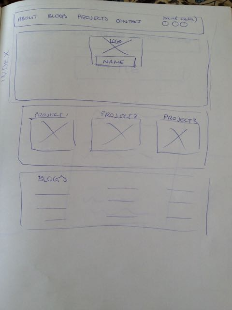
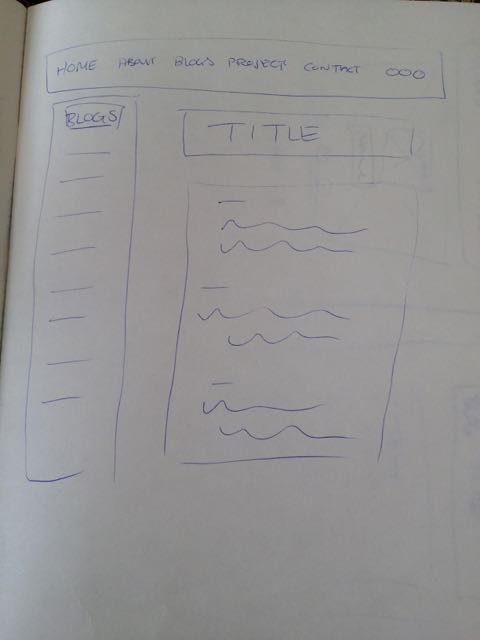
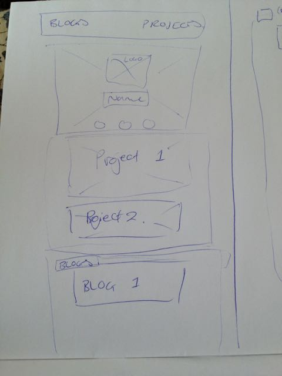
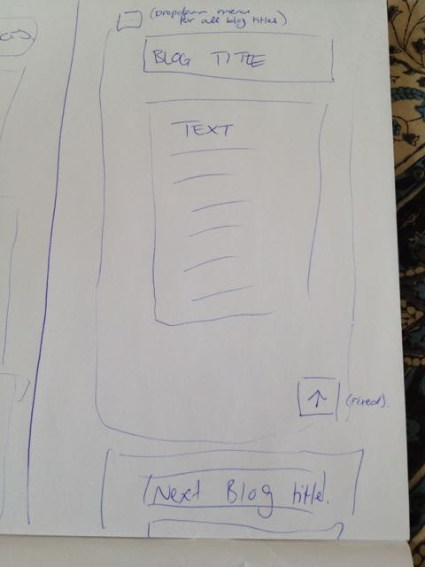

With the ever increasing variety of screen sizes that people use, websites need to be able to change their layout to fit accordingly. Otherwise content may not be presented properly to the user, and the user may have a bad experience - and means they may not come back.
Mobile first design refers to the practice of styling websites with mobile screens in mind first, and then adding further code for larger screens later. This means that small screen devices don't have to process a lot of extra code, which would slow them down.
Frameworks are blocks of pre-written CSS code that provide a lot of the structure to the layout. A pro is that it saves the developer a lot of time and makes layout much easier. A con is that sometimes the framework code overrides something the developer is trying to do. Also some frameworks may be unnecessarily large for the particular project.
Wireframes are basic starting points for the design process. There is no style involved, just simply blocking out where every element will go and establishing heirachy of order etc. This is a quick and easy way to be able to visualise the webpage layout.
   I found that the design of my webpage became more unlike my wireframe as time went on.
The most challenging thing for me has been the mobile first design - and I still haven't got it down yet. Writing html for a large screen, in terms of rows and columns, but then styling it for a small screen was difficult to get my head around